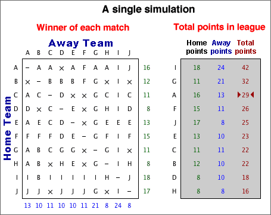

If you don't want to print now,
Probability describes situations where a random sample is selected from a population. It is also used to model a variety of other situations involving randomness.
Tennis match
A simple model for a tennis match between two players, A and B, assumes that:
A more complex model might introduce more parameters to relax the assumption of independence.
Simulation
For any values of π1 and π2, we could randomly generate the results of successive points until a match was complete.
This generates an instance of the model and is called a simulation.
Repetitions of a simulation
Repeating a simulation and observing the variability in the results can give insight into the randomness of the system's behaviour.
Model for sport league
Consider a sports league of 10 teams in which each team plays each other twice and:
| Points from a match = | 3 if team wins 1 if team draws 0 if team loses |
We will model the league with a simple model for the results of individual matches. In it, team A has over twice the probability of winning than losing, but all other teams are equally matched.
Simulation
This model can be used to randomly generate the results of all 90 matches in the league.

Repeating the simulation 100 times gives the following results:
Despite team A being so much better than the other teams, the simulation shows that it has little more than 50% chance of ending the season on top of the league.
English Premier Soccer League in 2008/9
The table below shows the points gained by all teams in the English Premier Soccer League at the end of the 2008/9 season.
| Team | Pts | |
| 1 | Manchester United | 90 |
| 2 | Liverpool | 86 |
| 3 | Chelsea | 83 |
| 4 | Arsenal | 72 |
| 5 | Everton | 63 |
| 6 | Aston Villa | 62 |
| 7 | Fulham | 53 |
| 8 | Tottenham Hotspur | 51 |
| 9 | West Ham United | 51 |
| 10 | Manchester City | 50 |
| 11 | Wigan Athletic | 45 |
| 12 | Stoke City | 45 |
| 13 | Bolton Wanderers | 41 |
| 14 | Portsmouth | 41 |
| 15 | Blackburn Rovers | 41 |
| 16 | Sunderland | 36 |
| 17 | Hull City | 35 |
| 18 | Newcastle United | 34 |
| 19 | Middlesburgh | 32 |
| 20 | West Bromwich Albion | 32 |
Evidence of skill?
A quarter of the matches in 2008/9 were draws, so we will conduct a simulation with a model in which all teams are equally matched and:
From each simulated league, we will summarise the spread of points at the end of the season using both their range and their standard deviation. After 100 simulated leagues, these measures of spread are shown below.

The actual spread of points in the 2008/9 league was much higher than those that appeared in the simulations with equally matched teams, indicating that there was indeed a difference between the skill levels of the best and worst teams in the league.
Interpreting a graphical summary of a sample
Simulations can also help us to assess features such as outliers, clusters or skewness in a data set by examining how often they appear in random samples from a population without such features.
In particular, we can examine variability in samples from a normal distribution that closely matches the shape of the data set.

The amount of skewness in the the actual data (top) is rarely seen in simulated normal samples (such as that shown above). This informally suggests that the the population underlying the data really is skew and not symmetric.
Random values
Simulations are conducted by generating random values from the probability distributions in the model.
A computer program should normally be used to generate random values. The program Excel contains functions that can be used.
Generating categorical and numerical values is usually based on random values that are equally likely to take any value between 0 and 1. Such a value is said to come from a rectangular (or uniform) distribution between 0 and 1 and has the probability density function shown below.

A value can be generated from a rectangular distribution with the Excel function "=RAND()" or, by hand, by generating a sequence of random digits (e.g. by rolling a 10-sided die).
Generating a categorical value
A random category can be generated from a rectangularly distributed random value, r .
If P(success) is denoted by the symbol π, then a success will be generated if r is less than π. This can be generalised as illustrated in the diagram below: